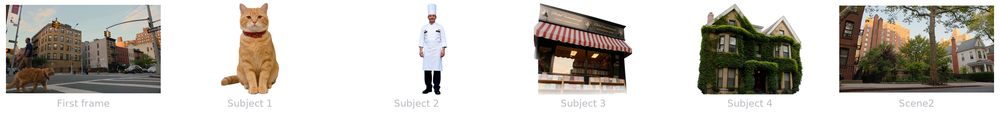

Case 1

Short promptA ginger tabby wearing a red bandana walks across a sunlit city intersection beneath brick apartment buildings. The camera pans toward a bookshop with a red-and-white striped awning and rows of books on outdoor shelves. A chef in a tall white hat, white coat, and dark trousers walks past the storefront while the cat continues along the curb. The view follows the leafy street toward a house covered in dense green ivy, revealing its pale window frames and steep roof, keeping in one continuous shot.